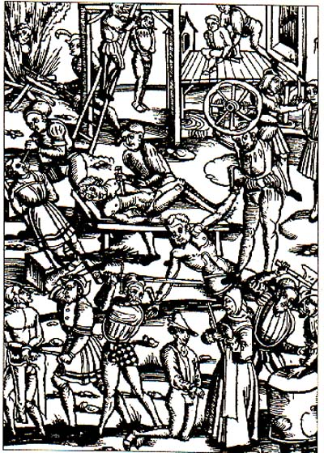

ed eccoci, immancabilmente, alla seconda puntata di questa rubrica di sua sponte generata, un po’ come il porcodio che ho cacciato due mattine fa, quando per spegnere l’assordante sveglia l’ho fatta cadere sul mio volto, procurandomi l’attuale linea di livido che mi percorre lo zigomo destro.
ma non è questo il punto.
una decina di giorni fa, esattamente il 7 maggio, invio una richiesta di “cambio registrante” al nic per un fottuto fottutissimo dominio .it, ben sapendo che non sarebbe andata bene, come ogni volta, come sempre con il nic a cui non sta mai bene un cazzo e cambia moduli ogni tre giorni a rotazione randomica per creare ancora pi√π panico. insomma invio il suddetto fucks – al numero giusto, compilando a fondo tutti i campi, attendendo anche qualche giorno prima di domandarmi come cazzo fosse andata a finire e strizzandomi bene le palle nella speranza di non morire di rancore, almeno questa volta.
atteso un po’ di tempo – il 10 maggio – faccio un bel whois – e ovviamente non √® cambiata una ceppa di cazzo. mi decido a reinviare il fax, avendo notato una totale assenza di reazioni.
aspetto un altro po’ di tempo, e questa volta vado a fare il whois perfettamente sereno – ma GNENTE, non hanno cambiato UN CAZZO, sembra un GOVERNO ITALIANO, sembra una campagna elettorale in GHANA porcodeddio. bene, mi dico, avr√≤ sbagliato qualcosa. tento un 4-5 telefonate al nic, ma tiro ben presto la cornetta contro il telefono (s√¨, esattamente, io TIRO la cornetta del telefono CONTRO il telefono) e mi appresto a scrivere adeguata e sontuosa e-mail. la scrivo con amore, fingendo partecipazione e attenzione, in modo tale che la mafia del nic non mi metta nella leggendaria blacklist dell’authority, sulla quale stanno i nomi di quelli cui vanno respinte tutte le richieste senza alcuna speranza. spedisco, e dopo poco mi torna una risposta di una certa MANUELA:
> Buongiorno,
> in data 2 maggio abbiamo ricevuto una richiesta di cambio MNT da XXXXX ad
> XXXXX, se √® vostra intenzione cambiare anche l’assegnatario del nome a
> dominio √® necessario inviare l’apposita richiesta reperibile alla seguente
> URL:
> http://www.nic.it/operazioni/opRegistrante.html( Modifica del Registrante)
mitico, allora i fax ci arrivano davvero! allora non vengono usati per fabbricare carta da culo per i ministeri! allora non sono solo un pugno di dati per i quali un giorno sar√† legittimo uccidere!! d’altra parte, la risposta √® assolutamente inutile, perch√© il cambio mantainer √® gi√† avvenuto, cristo soffocato dalle noccioline. rispondo alla signorina, facendo notare che a me √® proprio il cambio registrante che mi interessa, e che ho inviato due fax sui quali gradirei sapere checcazzo vogliono. risponde il giorno dopo:
> Buongiorno,
> se si riferisce alla richiesta di cambio mNT da no provider a XXXX, è
> stata effettuata i primi di maggio.
> Cordiali saluti
> Manuela
ora. a parte che MANUELA a me non me dice UN CAZZO. ME NE FOTTO CHE TE CHIAMI MANUELA PORCODIO, se √® per questo mi sa che c’√® pure una legge italiana che IMPONE a chi fa servizi pubblici di firmare con nome e cognome le robe, ma comunque STICAZZI DI MANUELA, il punto √® che MANUELA NON SA LEGGERE. e a me un po’ preoccupa questo fatto che al cnr ci sta gente CHE NON SA LEGGERE, perch√© insomma come fanno a capire i dati di una ricerca? come a gestire l’autorit√† di controllo sui domini? COME? MALE, lo fanno MALE, coi FAX PORCO DI DIO, COI PHACS, i PHUCKUS DIOCANE IMBRIGLIATO NELL’ELICA DI UN MOTOSCAFO VOLANTE – I F A X. e poi: MA CHE NO MANTAINER, pORCODIDDIO, ce l’AVEVA un MANTAINER PRIMA, MA CHE TE BEVI?
rispondo, ancora una volta, nella speranza di resistere alla tentazione di suicidare la testolina di minchia che mi risponde e di risolvere l’arcANO. finalmente, dopo un paio di giorni di riflessione, mi arriva la SENTENZA:
> Buongiorno,
[grrr, sempre co' 'sto cazzo de' buongiorno, ma vai al punto porcoddio!]
> la richiesta di registrant-transfer inviata il 16 maggio è stata respinta con
> la seguente motivazione:
> Non e’ stata indicata la provincia/nazione relativa al luogo di nascita del
> nuovo registrante.
> Non e’ stato indicato l’indirizzo completo di residenza del nuovo registrante
> (via/piazza, nr. civico, cap, luogo, provincia/stato estero).
> Cordiali saluti
> Manuela
maiodicoporcoddddio – la PROVINCIA la potrai anche SCRIVERE TU A MANO DIOCANE, stai l√¨ vaffanculo hai INTERNET PER TE, HAY BANDA, HAY STRONZA DI MERDA DEL CAZZO TE E I TUOI FAX, ma poi mi chiedi LA VIA ESATTA e non me l’hai SCRITTO, sul modulo ci stava soltanto LUOGO DI RESIDENZA, tu e la tua fottuta AMBIGUITA’ di MERDA, DIOCRISTACCIO INFAME. devi M-O-R-I-R-E.
